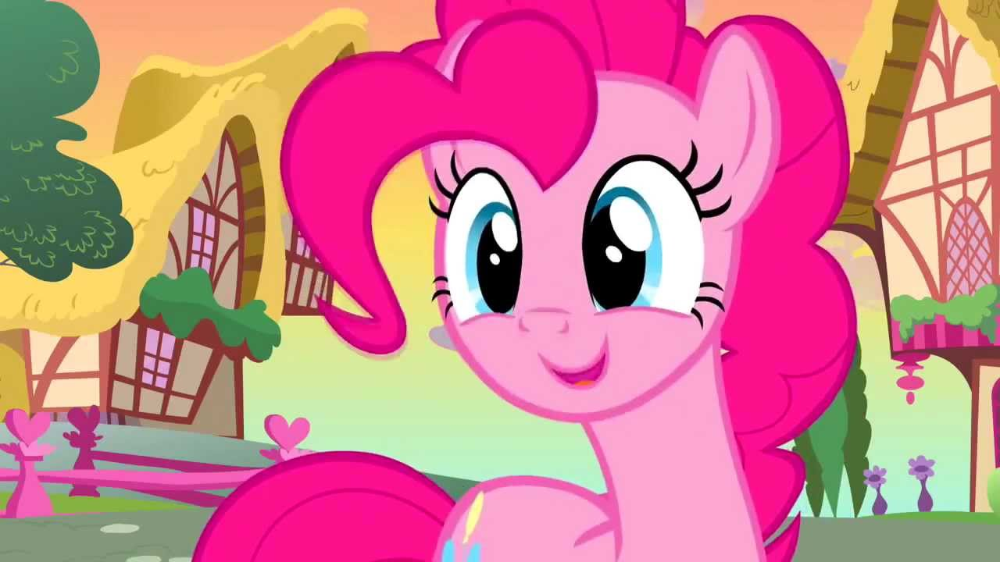

Пинки Пай
Пинки Пай (англ. Pinkie Pie) (полное имя Пинкамина Диана Пай (англ. Pinkamena Diane Pie)) — розовая земная пони с тёмно-розовыми шаровидными гривой и хвостом. Её знак отличия, три воздушных шара, олицетворяет её талант распространять надежду и радость, а также её желание развлекать друзей. Она занимается организацией вечеринок в Сахарном уголке, пекарне и кондитерском магазине, который напоминает пряничный домик, и владеет беззубым домашним аллигатором по имени Зубастик.

Комический персонаж, выросшая на «унылой каменной ферме», Пинки определяется как «трудоголик», мотивированная видеть людей, которых она любит, улыбаются и избавлять их от стресса, беспорядочно устраивая вечеринки и ведя себя как можно более диковинно; но неуверенная в себе и боится быть отвергнутой другими.